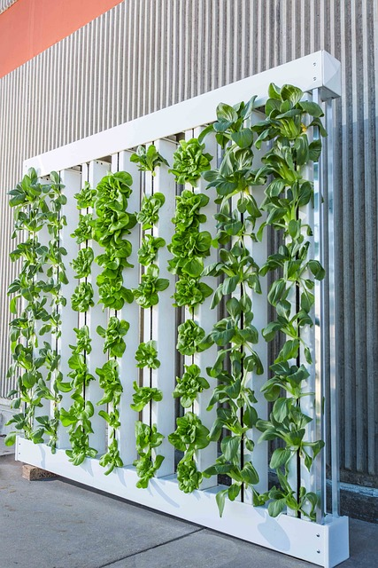
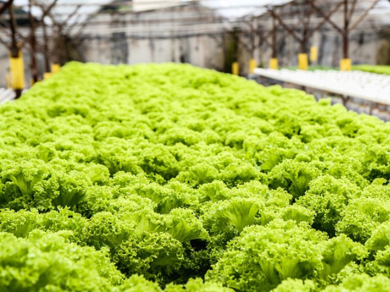
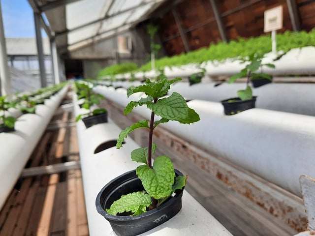
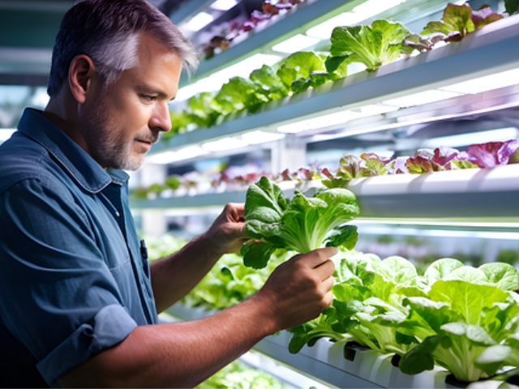
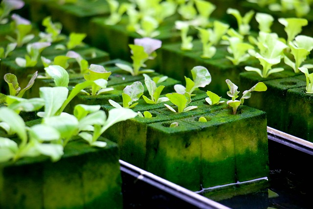

O que é Hidroponia?
A hidroponia é uma técnica de cultivo de plantas sem o uso de solo, utilizando soluções nutritivas em água para fornecer todos os elementos essenciais ao crescimento das plantas. Esse método inovador tem revolucionado a agricultura, permitindo a produção de alimentos em ambientes controlados e otimizando o uso dos recursos naturais.

Benefícios da Hidroponia

Produção eficiente em espaços reduzidos.

Crescimento das plantas acelerado e melhor controle sobre nutrientes.

Economia significativa de água comparada à agricultura tradicional.
Com o avanço da tecnologia e a crescente preocupação com a sustentabilidade, a hidroponia se destaca como uma solução inovadora e eficiente para os desafios agrícolas do século XXI. Sua aplicação oferece uma resposta direta às necessidades de um mundo em constante mudança, proporcionando alimentos frescos e nutritivos de forma responsável.

Nome: ueliton Eduardo de Andrade
E-mail: @ueliton.andrade@escola.pr.gov.br
Telefone: (43) 998403427
Endereço: Barra Preta, PR, 86860-000